Wisp is a small animated character that welcomes your visitors, shows them around, answers their questions in their own language, reads the page, and helps them get things done. It works on any website, inside React, Next.js and Vue apps, and in desktop apps.
This guide shows how to add it in one line, give it your own look, and teach it about your product.
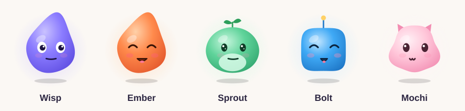
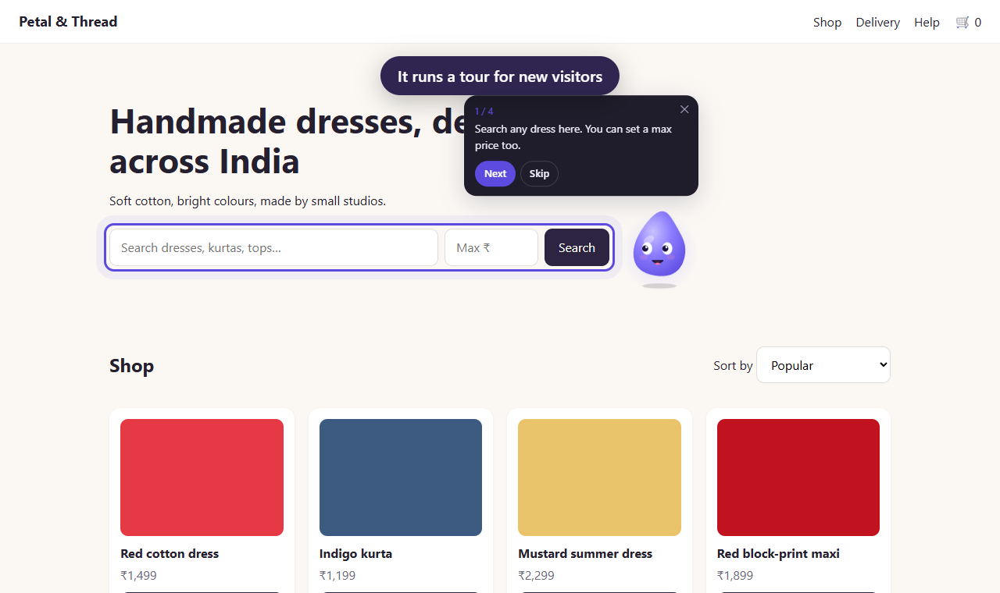
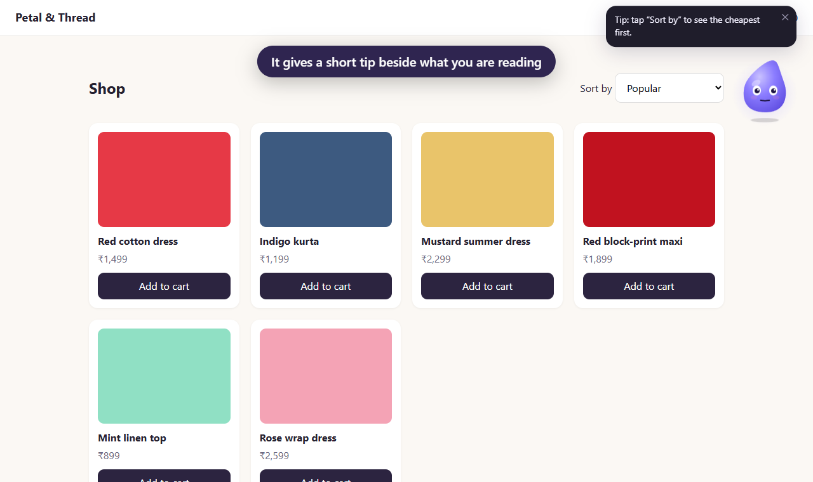
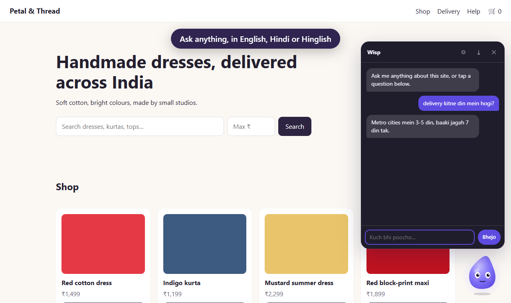
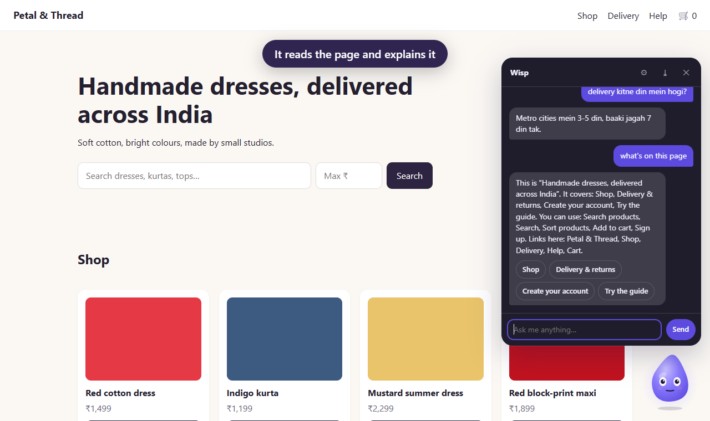
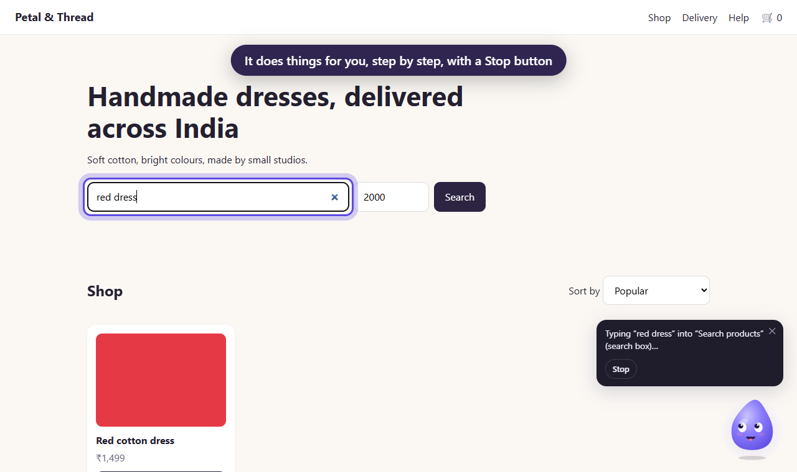
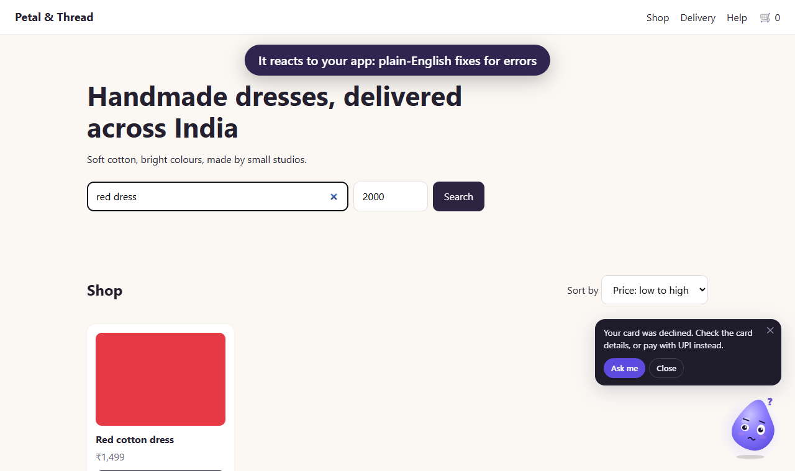
Every character is drawn by Wisp itself from a short description, so it stays sharp at any size and every mood works with every look. It blinks, breathes, follows the cursor, giggles when tapped, and falls asleep when the visitor is idle. People who turn on "reduce motion" get a calm, still version.
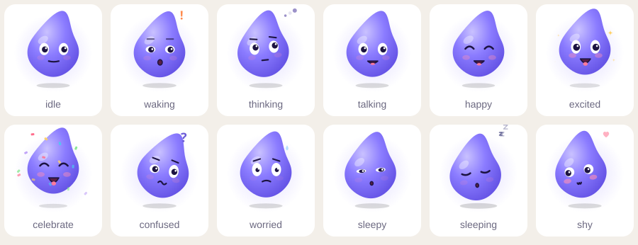
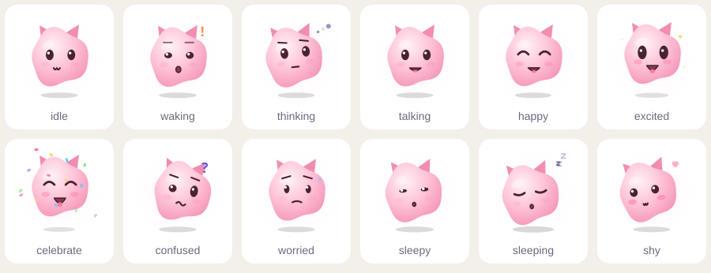
| Mood | When it shows |
|---|---|
| waking, happy | The visitor arrives, taps it, or comes back |
| talking, thinking | It speaks; it's working something out or the page is loading |
| excited, celebrate | A goal is reached: order placed, account created |
| confused, worried | An error, or before something final like paying |
| sleepy, sleeping, shy, idle | Nobody's around, it's tapped a lot, or it's just waiting |
<script src="/wisp.js" data-config="/wisp.json" defer></script>wisp.js is built to packages/web/dist/wisp.js (about 22 KB zipped). Put it next to your site and write wisp.json (step 3). That's all; it works with no AI.
import { Wisp } from '@veloceai/wisp-react';
const router = useRouter();
<Wisp config={config} navigate={(path) => router.push(path)}>
<App />
</Wisp><Wisp :config="config"><App /></Wisp> // from '@veloceai/wisp-vue'Electron and Tauri apps use the web build as is. Keep any AI key in the system keychain, never in the app's web code.
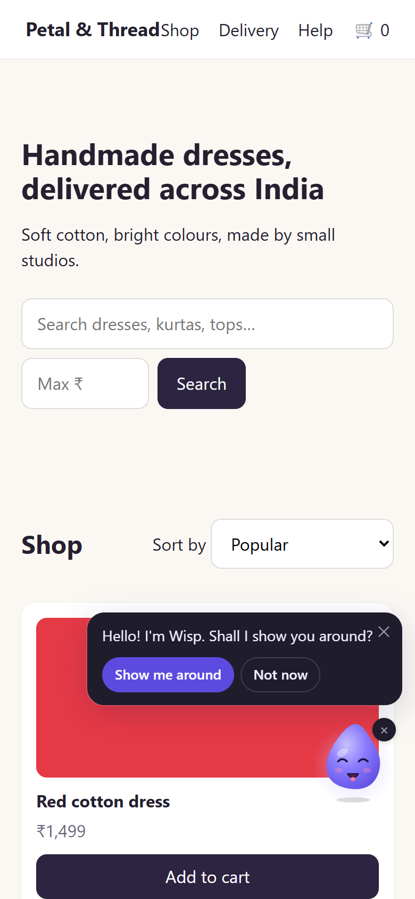
On phones Wisp stays small in a bottom corner and moves away if it would cover a button. If your app has a bottom tab bar, tell it how tall: "insets": { "bottom": 64 }.
A small × hides it into a tab at the edge; it remembers that.
"character": {
"name": "Tara",
"body": {
"shape": "blob",
"color": "#FF8A4C",
"shade": "#E2552B",
"glow": "#FFD0A8"
},
"eyes": { "style": "sparkle" },
"mouth": { "style": "cat" },
"accessory": {
"kind": "antenna",
"color": "#FFD166"
}
}| Part | Choices |
|---|---|
| shape | wisp, round, squircle, blob, bean |
| eyes | classic, dot, sparkle · size, spacing, height |
| mouth | smile, cat, tiny |
| accessory | none, antenna, sprout, ears, crown |
| colours | body, shade, glow, belly, outline, cheeks |
Or start from a sample: "character": "ember".
"size": { "desktop": "large", "phone": "small" }, // or a number of pixels
"theme": { "accent": "#E2552B", "font": "Poppins, sans-serif", "radius": 8, "mode": "auto" }Changing the look never changes behaviour. Wisp lives in its own walled-off layer, so your site's styles can't break it and it can't break your site.
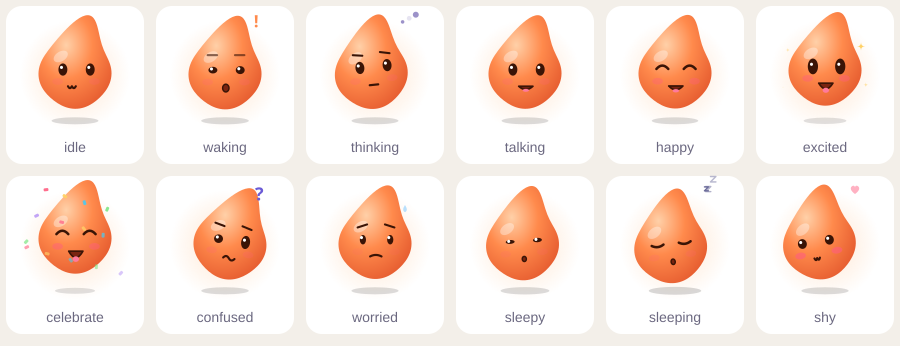
{
"siteId": "my-shop",
"tour": [
{ "target": "#search", "text": "Search any dress here." },
{ "target": "#sort", "text": { "en": "Sort by price.", "hinglish": "Price se sort karo." } }
],
"sections": [ { "id": "pricing", "tip": "The free plan covers one project." } ],
"faq": [
{ "q": ["How long is delivery?", { "hinglish": "Delivery kitne din mein?" }],
"a": { "en": "3 to 5 days.", "hi": "3 से 5 दिन।", "hinglish": "3 se 5 din." } }
],
"errors": [ { "match": "card_declined", "fix": "Your card was declined. Try UPI instead." } ],
"reactions": { "cart-add": { "mood": "happy", "line": "Nice pick!" } }
}data-wisp-section="pricing" so it knows where tips belong.wisp:success, wisp:error, wisp:loading, wisp:loaded, wisp:conversion, or any name under "reactions".{ "ta": "…" } and list it under "languages". Button labels go under "ui".OpenAI, Anthropic, Gemini, Groq, OpenRouter or a local Ollama. The key stays on your server in a tiny proxy; visitors' browsers never see it.
WISP_PROVIDER=gemini WISP_API_KEY=… WISP_ORIGINS=https://myshop.in npx wisp-proxy
// then in wisp.json: "ai": { "endpoint": "https://myshop.in/wisp" }Built-in cost limits: 20 AI calls per visitor a day, an 8-second timeout, and prewritten answers whenever the AI is off, slow or over its limit. Questions your FAQ already answers never call the AI.
The device's own voice for free, or a natural AI voice through the proxy. Each line is spoken once and then reused at no cost. A mic button lets visitors ask out loud.
"actions": [
{ "name": "search", "description": "Search products", "params": { "query": { "type": "string" } } },
{ "name": "track-order", "description": "Track my order", "button": "Track my order" },
{ "name": "place-order", "description": "Place the order", "final": true }
]
Wisp.instance.registerAction('search', ({ query }) => runMySearch(query));data-wisp-sensitive.data-wisp="off" on an element, or "blocked": { "selectors": [".admin"], "paths": ["/admin*"] }.| ☐ | Welcome and tour work on your home page |
| ☐ | Each key section has a short tip |
| ☐ | 10+ real FAQ answers, in the languages your visitors use |
| ☐ | Success and error events fire at the right moments |
| ☐ | Private areas are blocked; private inputs are marked |
| ☐ | On a phone it doesn't cover your buttons or tab bar |
| ☐ | If AI is on: the key is only on the server and origins are set |
Full reference, a demo shop and a one-minute video: github.com/VeloceAI/wisp.